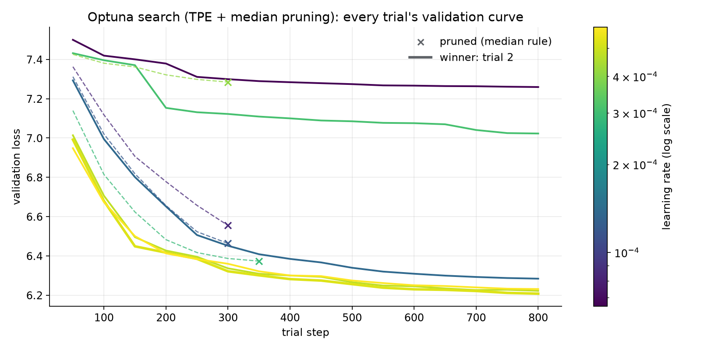
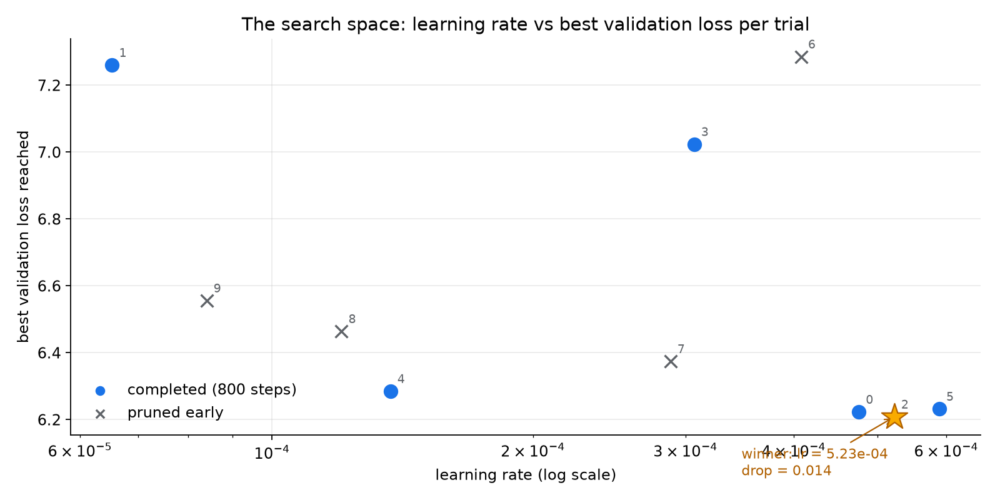
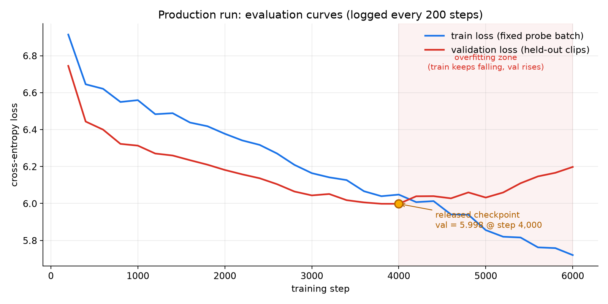

Part 1 of 2 The Music-LLM series Next: Part 2 — A Billion-Parameter Music Model: What 23× More Parameters Bought →
Type “jazz music”, and a small neural network writes thirty seconds of audio — one token at a time, fifty tokens per second, choosing each one from 2,048 possibilities. Nothing about it is borrowed except the ears and the dictionary: the model itself, its training loop, and the two-GPU machinery it learned on were all written by hand. This is the story of building it.
A note on expectations before the story starts: this is deliberately a small model, built for research and education. Trained on eight hours of audio with ten genre captions, it produces genre-flavoured musical texture — not the polished songs of large production systems. The point was never to compete with them. The point was to understand, by building, every layer they are made of.
First, teach it to hear
A language model predicts the next word. Music has no words — so the first move is to give it some. A frozen neural codec called EnCodec compresses raw audio into four parallel streams of tokens, each drawn from a 2,048-entry codebook, fifty time-steps per second. Suddenly music is a language: thirty seconds of sound becomes 1,500 positions of four-track “text”, and the whole machinery of language modelling applies.
The prompt enters through a different door. A frozen T5 text encoder turns “jazz music” into a handful of vectors, and every layer of the model consults them through cross-attention — the same mechanism that lets translation models glance back at the source sentence. At generation time, classifier-free guidance sharpens the steering: the model predicts once with the prompt and once without, and the difference between the two opinions is amplified. What sits in the middle — the only part that learns — is a 44.9-million-parameter transformer: eight blocks of causal self-attention, cross-attention, and feed-forward layers.
Two GPUs, one model
The training machine had two NVIDIA RTX A6000s, and the interesting way to use them was not the standard library call. Pipeline parallelism was written by hand instead, GPipe-style, in about 120 lines: the first four transformer blocks live on one GPU, the last four and the output heads on the other, and every batch is sliced into four micro-batches that stream through like cars on an assembly line — while the second GPU works on one micro-batch, the first is already processing the next.
The subtle part is correctness. Each micro-batch’s loss is weighted by its share of valid audio tokens before its backward pass, which makes the accumulated gradients mathematically identical to training on one giant GPU — not approximately: identically, and a test compares every single parameter’s gradient between the two routes to prove it. The entire pipeline was developed and verified on a laptop CPU before it ever touched CUDA.
Fast applies to the batch.”
The bug that lived in the wires
Then training started, and the gradients came back infinite. The loss
looked healthy; gradient norms were 1011, sometimes inf, from
the second step — at a learning rate of nearly zero. Hyperparameters were
re-tuned, warmup added, guards written. Nothing changed, because nothing was wrong
with the software.
What followed was a one-variable-at-a-time elimination hunt. The same training step, same seed, same data: healthy on a laptop. Healthy on the workstation’s CPUs. Every individual CUDA kernel — matrix multiply, softmax, layer-norm — tested perfect. The whole model on a single GPU: perfect. Only one suspect remained: the wire between the two GPUs. A raw copy test convicted it — every direct GPU-to-GPU transfer on that machine silently corrupted its data, in both directions, at every size, while the driver cheerfully reported peer-to-peer support as available. A PCIe configuration fault, two layers below PyTorch.
The fix: the pipeline now round-trips a probe tensor across the boundary at startup, and if the bytes come back wrong, it reroutes all traffic through CPU memory — a detour measured at 0.3% overhead. The deepest lesson of the project was not about transformers at all: when software has been acquitted layer by layer, test the hardware — and make the system defend itself.
Teaching it, properly this time
With honest gradients at last, hyperparameter search could mean something. An Optuna study ran ten trials through the real two-GPU pipeline, under the same learning-rate schedule as production — each trial a fresh model trained for 800 steps, with a median-pruning rule cutting the laggards at a third of the cost. For the first time, different learning rates produced genuinely different curves:


The production run took the winner and trained on all 999 clips — 20-second windows, 64,000 tokens per step, warmup then cosine decay. Validation loss fell from 6.6 and bottomed out at 5.998 at step 4,000, where the best checkpoint froze automatically. Then the two curves did what they always do on a small dataset: training loss kept falling while validation loss turned upward — memorisation — and the run was stopped by hand. The released model is the checkpoint from the valley, not from the end.


So… what did it learn?
Judge for yourself. Three prompts, thirty seconds each, generated by the released checkpoint on a laptop. Remember the scale: this is what 45M parameters and eight hours of audio sound like — texture and genre-flavour, found entirely on its own.
Try it yourself
The model lives on Hugging Face, and the repository is self-contained: weights, inference code, and a runnable example ship together. Three commands from download to your own generated audio:
hf download khashayargh/music-llm-45m --local-dir music-llm-45m
cd music-llm-45m && python example.py "jazz music" --seconds 15